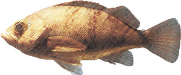

<!DOCTYPE html>
<html lang="ja">
<head>
<meta charset="utf-8">
<meta name="viewport" content="width=device-width">
<script src="https://maps.googleapis.com/maps/api/js"></script>
<title>複数マーカー表示して、クリックすると吹き出し表示</title>
<style>
#google_maps{
  width:100%;
  height:400px;
}
</style>
</head>
<body>

  <div id="google_maps"></div>

  <script>

    var mapCanvas = document.getElementById( 'google_maps' );
    var mapOptions = {
      center : new google.maps.LatLng( 35.452334, 139.705956 ),
      zoom : 13
    };
    var myMap = new google.maps.Map( mapCanvas, mapOptions );


    var markers = [
      {
        position: new google.maps.LatLng (  35.446485, 139.672794 ),
        content:'<div><p>メバルが釣れるところ1</p></div>'
      },
      {
        position: new google.maps.LatLng ( 35.436591, 139.678631 ),
        content:'<div><p>メバルが釣れるところ2</p></div>'
      },
      {
        position: new google.maps.LatLng ( 35.469661, 139.737124 ),
        content:'<div><p>デカイメバルが釣れるところ</p></div>'
      }
    ]

    for(var i = 0, l = markers.length; i < l; i++){
      var marker = new google.maps.Marker({position:markers[i].position});
      var infoWindow = new google.maps.InfoWindow({content:markers[i].content});

      marker.setMap(myMap);

      marker.addListener('click', (function(infoWindow,marker){
        return function() {
          infoWindow.open( myMap,marker );
        }
      })(infoWindow,marker))


    }

  </script>

</body>
</html>
